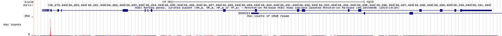
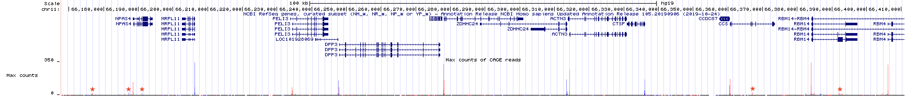
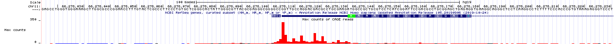
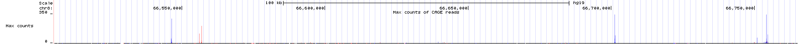
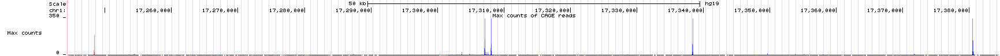

4 Finding Genes with TSS-seq
The transcriptional start site or TSS marks the position of the first (+1) templated nucleotide of a given transcript. In this chapter, you will learn how TSS sequencing can be used to locate transcriptional start sites! To follow along with the text and to answer the “Test Your Understanding” questions, start with the “TSS-seq” session link. You can also use this link as a starting point to view TSS-seq data for any gene of interest.
4.1 What is TSS-seq?
Recall that RNAseq involves the sequencing of DNA fragments derived from all the mRNA present in a sample at the time of mRNA extraction. In this way, RNAseq attempts to identify all exons. TSS-seq is a special type of RNA sequencing that involves sequencing DNA that is ONLY derived from the 5’ end of all the mRNA present in a sample at the time of mRNA extraction. How can RNA sequencing be modified so that the only fragments sequenced come from the 5’ end of the mRNA? Recall that mRNA has a 5’ cap structure. The 5’ cap is exploited in TSS-seq to pinpoint the transcriptional start site (TSS) as it is added to the beginning of a pre-mRNA during transcription. By sequencing only the portion of mRNA that is next to the 5’ cap one can identify the TSS!
The steps necessary to prepare mRNA for TSS-seq are outlined in Figure 4.1. First, poly-A containing RNA (mRNA) is extracted from as described previously (Figure 3.2). Due to the fragility of RNA, however, RNA extractions typically includes full length mRNA (with a 5’ cap) and partially degraded mRNA (with a 5’ phosphate instead). How can one distinguish full length mRNA from partially degraded fragments? Scientists have devised a clever method.
![TSSseq protocol. A) All mRNA possessing a poly A tail is separted from total RNA. The resulting sample contains both full length mRNA with a 5' cap and partially degraded mRNA with a 5' phosphate (P-). B) An enzyme that removes 5' phosphates is added. See the P change to OH. C) An enzyme is added that removes the 5' cap structure. See the black circle change to a P. D) RNA ligase attaches an RNA oligo (green rectangle) to all RNAs that had a 5' phosphate in C). E) The addition of reverse transcriptase and random oligos produce cDNA fragments. Those cDNA fragments that once had a 5' cap all have the same sequence at their 3' ends.](static/images/TSSseqmethod.png)
Figure 4.1: TSSseq protocol. A) All mRNA possessing a poly A tail is separted from total RNA. The resulting sample contains both full length mRNA with a 5’ cap and partially degraded mRNA with a 5’ phosphate (P-). B) An enzyme that removes 5’ phosphates is added. See the P change to OH. C) An enzyme is added that removes the 5’ cap structure. See the black circle change to a P. D) RNA ligase attaches an RNA oligo (green rectangle) to all RNAs that had a 5’ phosphate in C). E) The addition of reverse transcriptase and random oligos produce cDNA fragments. Those cDNA fragments that once had a 5’ cap all have the same sequence at their 3’ ends.
First, an enzyme that removes 5’ phosphates from all partially degraded RNA molecules is added to the tube. Full-length, capped mRNAs do not possess a 5’ phosphate and are thus not affected by this enzyme. Second, an enzyme that removes the 5’ cap from full length mRNAs is added next. Now, full-length mRNAs that were once capped possess a 5’ phosphate while partially degraded mRNAs do not! Third, an RNA oligo27 and RNA ligase28. As a result, the single-stranded RNA oligo is ligated to the 5’ end of only those RNAs that have 5’ phosphates. Finally, reverse transcriptase and random primers are added. As a result, all the RNA in the tube is used as template to synthesize cDNA (complementary DNA). Importantly, only those cDNAs that once had a 5’ cap are tagged with a known sequence at their 3’ ends. This sequence tag can now be exploited for sequencing as the sequencing reaction is primed with a DNA oligo that hybridizes to the sequence tag. The short sequence reads that are collected are then computationally aligned to the genome.
4.2 Why is TSS-seq useful?
As we just saw, RNA-Seq data can identify exons, segments of the genome that are transcribed and remain in mRNA (introns are transcribed but removed from mRNA). Often, RNA-seq data will also reveal how exons are linked together (with split alignments). That said, it is not always sufficient for gene identification purposes. To identify an individual transcription unit (a single gene) with more confidence, it is better to know the position of the exons and the TSS. To see this for yourself, review RNAseq data corresponding to a small region of the genome (Figure 4.2). The NCBI Refseq gene prediction track is hidden on purpose. As you can see, the histogram and sequence read alignments including the split alignments are displayed. How many genes do you think are in this region? What is your rationale?

Figure 4.2: RNAseq data corresponding to a small region in the genome with the base position and gene prediction tracks hidden. Guess how many genes you think map to this region of the human genome. Continue reading below to discover the answer.
In Figure 4.2, there are two main groups of split alignments. It would be reasonable to guess that there are two genes in this region. To see the true number of genes click here. This link takes you to the same genome region as in Figure 4.2 but with the gene prediction and base position tracks visible. If you guessed wrong, do you see why you were misled?
4.3 How is TSS-seq Data Visualized?
The UCSC Genome Browser contains numerous evidence tracks displaying TSS-seq data. We will focus on one that was generated by the FANTOM5 Consortium of labs in Japan (FANTOM stands for Functional Annotation of the Mammalian Genome). Click the link to learn more about FANTOM5. To view this evidence track click the TSS-seq session link.
Your genome browser should now display the “Max Counts of CAGE29 reads” evidence track for BBS1. This evidence track displays TSS-seq data in histogram form only (Figure 4.3). The track settings are configured so that the Y-axis maximum is set to an absolute value of 350 read counts. Setting the Y-axis maximum to 350 is sufficient for most genes. For highly expressed genes it is better to set the Y-axis to “auto-scale to data view”. Specifically, go to the track settings page. Scan down until you see “Data view scaling:”. Change the pulldown menu from “use vertical viewing range setting” to “auto-scale to data view”. Then click submit. If you do this for BBS1, the Y-axis should be considerably less. Before you move on, change the Y-axis back to “use vertical viewing range setting”. If you forget, you may notice that TSSseq data is noisy. Single sequence reads that map to random positions in the genome are plentifal and can be ignored.

Figure 4.3: TSSseq data for BBS1.
Zoom out 10X. The genome browser window is now focused on a larger portion of the genome surrounding BBS1 (Figure 4.4). Notice that there are both red peaks and blue peaks. There are also tall peaks and tiny peaks.
Recall that genes can be found on the top strand or the bottom strand as RNA polymerase can use either strand as template for transcription. If RNA polymerase uses the bottom strand as template then it moves from left to right (5’ to 3’) and produces an mRNA that matches the top strand sequence and is complementary to the bottom strand (the top strand is the informational strand). If RNA polymerase uses the top strand as template then it moves from right to left (also 5’ to 3’ relative to the bottom strand) and produces an mRNA that matches the bottom strand sequence (the bottom strand is the informational strand). Histrogram peaks displayed in red represent TSSes for top strand genes. Histogram peaks displayed in blue represent TSSes for bottom strand genes.
The taller a histrogram peak at a given location, the more sequence reads that start at that spot. The more read counts, the more reliable the data and the more likely the data represents a true TSS. In fact, the tiny peaks observed in Figure 4.4 (find each red asterix) may reflect background noise30 and may not represent a true TSS. Moreover, the absence of a peak at a location where one is predicted to exist does not mean that the gene prediction is incorrect. This might be an instance where the gene was not expressed in the tissue sample that was used to generate the TSS-seq data. There is a common saying, “Absence of evidence is not evidence of absence”.

Figure 4.4: TSSseq data of a larger region surrounding BBS1. Each asterix (my annotation) highlights sequence reads that are not likely to represent true transcriptional start sites.
Now zoom in to the TSS for BBS1 (Figure 4.5). You can see that the position in the genome where the majority of experimentally defined TSSs are located is at the predicted transcriptional start site. This is not always the case. Also, notice that the transcriptional start sites for BBS1 are spread out to some degree. This is normal.

Figure 4.5: A close up view of the TSS-seq histogram data surrounding the predicted transcriptional start site for BBS1 (as defined by the NCBI refseq evidence track). The translational start site of BBS1 is shown in green.
Again, this is a great example of an evidence track that provides unbiased experimental evidence for the existence of a gene. It provides the position of all transcriptional start sites (TSS) within the genome. Each TSS identified by TSS-seq was not predicted to exist but was experimentally determined without prior knowledge (no bias).
That said, TSSseq data is not always sufficient to determine the number of individual genes in a given region of the genome. For example, review the TSS-seq histogram data in (Figure 4.6) and try to predict the number of genes in this region. I have omitted the gene prediction track to illustrate a point.
Figure 4.6: This is an image of the TSSseq evidence track for a small region of the human genome. All other tracks have been hidden. Count the number of transcription starts sites then guess how many genes you think these TSS peaks correspond to.
Now click here to see how many genes there really are in the genomic region shown in Figure 4.6. How does this differ from what you thought? Do you see why you were misled? Notice that the link has been configured to include the gene prediction track along with the RNA-seq and TSS-seq data tracks. Do you see how the RNA-seq data combined with the TSS-seq data provides a more complete picture of the true number of genes present? After all, there are genes that utilize alternative transcription initiation sites (Review (Chapter 2), “One gene, many splice variants”)!
4.3.1 Test Your Understanding
Some of the TYU questions will require the TSS-seq data displayed in the figure below (NOTE that the gene prediction track is hidden). To enlarge click on the image.

Click on the link above to see the questions.
4.3.2 For Discussion
Click link to see the discussion questions.
4.4 Take Home Messages
- TSS-seq data is similar to RNA-seq data but with TSS-seq only the mRNA segment closest to the 5’ cap is sequenced.
- Whereas TSS-seq data identifies transcription start sites (TSS) of expressed genes, RNA-seq identifies exons.
- Finally, TSS-seq data combined with RNA-seq data is able to identify each transcription unit with more confidence.
© 2026, Maria Gallegos. All rights reserved.
Short single-stranded RNA chain↩︎
RNA ligase is similar to DNA ligase in that both require a 5’ phosphate and a 3’ hydroxyl to form a phosphodiester bond between two nucleic acid chains. The main difference: RNA ligase links two RNA chains together while DNA ligase links two DNA chains together↩︎
CAGE is short for ”Cap Analysis Gene Expression”↩︎
Molecular biology is messy. Each enzymatic step listed in Figure 4.1 is not likely to achieve 100% success. For example, partial mRNAs that fail to have their 5’ phosphates removed can be sequenced along side all the true full-length mRNAs.↩︎